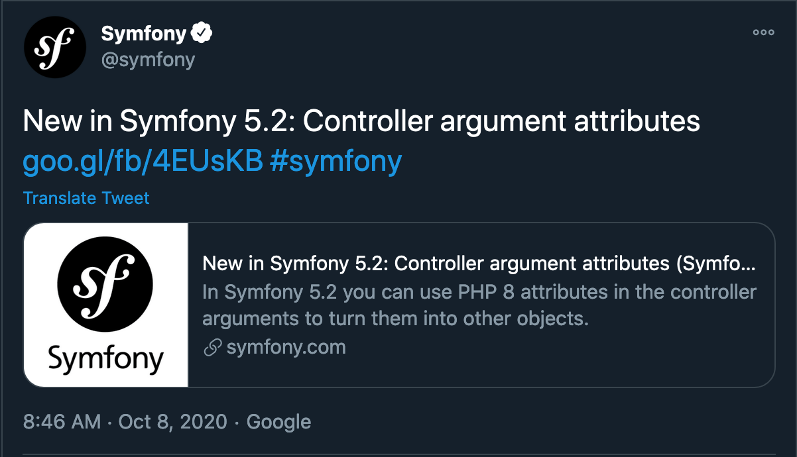

Dive in the dependency injection container

 - Dive in the dependency injection container
- Dive in the dependency injection container

Stéphane Hulard
Consultant, Formateur, Contributeur.
Un pattern ?
Pourquoi ?
Comment ?
Une version basique
class Moteur
{
public function __construct(string $name)
{
$this->name = $name;
}
}
Une version basique
class Voiture
{
public function __construct()
{
$this->moteur = new Moteur('v8');
}
}
class Voiture
{
public function __construct(Moteur $moteur)
{
$this->moteur = $moteur;
}
}
Une version basique
$container = [
'moteur' => static function (): Moteur {
return new Moteur('standard');
},
'v8' => new Moteur('v8')
];
Une version basique
$container['voiture'] = function () use ($container): Voiture {
return new Voiture($container['moteur']);
};
$maVoiture = $container['voiture']();
Dans Symfony
#services.yaml
moteur:
class: Moteur
attributes:
$name: 'standard'
v8:
class: Moteur
attributes:
$name: 'v8'
voiture:
class: Voiture
attributes:
$moteur: '@v8'
Intérêt ?
Découplage, Rôle, Architecture.
Dans l'écosystème PHP
Dans les frameworks
/* Laravel */
class VoitureServiceProvider extends ServiceProvider
{
public function register()
{
$this->app->bind('moteur', function (): Moteur {
return new Moteur('standard');
});
$this->app->bind('v8', new Moteur('v8'));
$this->app->bind('voiture', function (Application $app): Moteur {
return new Voiture($app->make('v8'));
});
}
}
/* Laravel */
class VoitureServiceProvider extends ServiceProvider
{
public function register()
{
$this->app->bind('moteur', function (): Moteur {
return new Moteur('standard');
});
$this->app->bind('v8', new Moteur('v8'));
$this->app->bind('voiture', function (Application $app): Moteur {
return new Voiture($app->make('v8'));
});
}
}
/* Lamina service manager */
$serviceManager = new Laminas\ServiceManager\ServiceManager([
'invokable' => [
'v8' => new Moteur('v8')
],
'factories' => [
'moteur' => function(ContainerInterface $container, $requestedName) {
return new Moteur('standard');
},
'voiture' => function(ContainerInterface $container, $requestedName) {
return new Voiture($container->get('v8'));
},
],
]);
$maVoiture = $serviceManager->get('voiture');
/* Lamina service manager */
$serviceManager = new Laminas\ServiceManager\ServiceManager([
'invokable' => [
'v8' => new Moteur('v8')
],
'factories' => [
'moteur' => function(ContainerInterface $container, $requestedName) {
return new Moteur('standard');
},
'voiture' => function(ContainerInterface $container, $requestedName) {
return new Voiture($container->get('v8'));
},
],
]);
$maVoiture = $serviceManager->get('voiture');
Les solutions indépendantes
$container = new Pimple\Container();
$container['moteur'] = function (): Moteur {
return new Moteur('standard');
};
$container['v8'] = new Moteur('v8');
$container['voiture'] = $container->factory(
function(Pimple\Container $c) {
new Voiture($c['v8']);
}
);
$maVoiture = $container['voiture'];
$container = new DI\Container();
$container->set('moteur', function (): Moteur {
return new Moteur('standard');
});
$container->set('v8', new Moteur('v8'));
$container->(
'voiture',
DI\factory(function (ContainerInterface $c): Voiture {
new Voiture($c->get('v8'));
}
);
$maVoiture = $container->make('voiture');
Normalisation et PSR11
PSR11Une interface pour les gouverner tous
namespace Psr\Container;
interface ContainerInterface
{
public function get($id);
public function has($id);
}
Est-ce vraiment utile ?
IDD Interface Driven Development 🤩
interface Moteur {
public function demarrer(): bool;
}
interface Voiture {
public function allerA(Destination $destination): bool;
}
IDD Interface Driven Development 🤩
class MoteurV8 implements Moteur
{
public function demarrer() {
$this->faireDuBruit();
}
}
IDD Interface Driven Development 🤩
$container['v8'] = new MoteurV8();
$container['voiture'] = function () use ($container): Voiture {
return new Voiture($container['moteur']);
};
$maVoiture = $container['voiture']();
Pourquoi l'utiliser ?
Les capacité cachées de votre application ?
class CustomQueryPass implements CompilerPassInterface
{
public function process(ContainerBuilder $container)
{
$container
->getDefinition(UploadExam::class)
->setArgument(
'$files',
$container->getDefinition('app.filesystem.tmp_dicom')
);
}
}
Dernières nouveautés Symfony ?

Dernières nouveautés Symfony ?
use App\Entity\MyUser;
use Symfony\Bundle\FrameworkBundle\Controller\AbstractController;
use Symfony\Component\Security\Http\Attribute\CurrentUser;
class SomeController extends AbstractController
{
public function index(#[CurrentUser] MyUser $user)
{
// ...
}
}
Convention ou maitrise des outils ?
Facilité, Documentation.